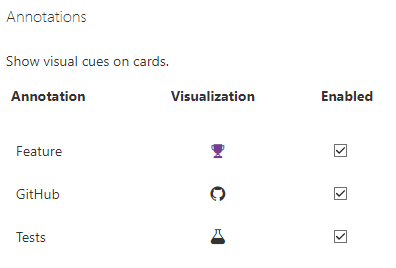

Not Ekleme: Kartlara not ekleyebilirsiniz. Bu notlar, kartın üzerinde görüntülenebilir ve diğer kullanıcılarla paylaşılabilir.
Zaman Damgası: Notlar, eklenme tarih ve saat bilgisiyle birlikte görüntülenebilir. Bu, notların ne zaman eklendiğini takip etmenizi sağlar.
Görünürlük Ayarları: Notları belirli kullanıcılara veya kullanıcı gruplarına görünür veya gizli hale getirebilirsiniz. Bu şekilde, notları sadece belirli kişilere veya gruplara yönelik olarak paylaşabilirsiniz.
